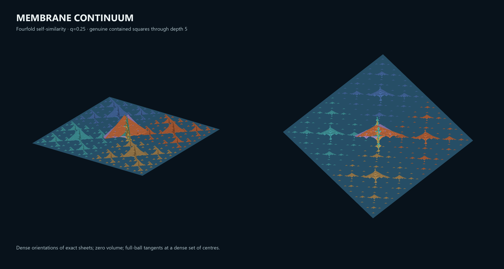
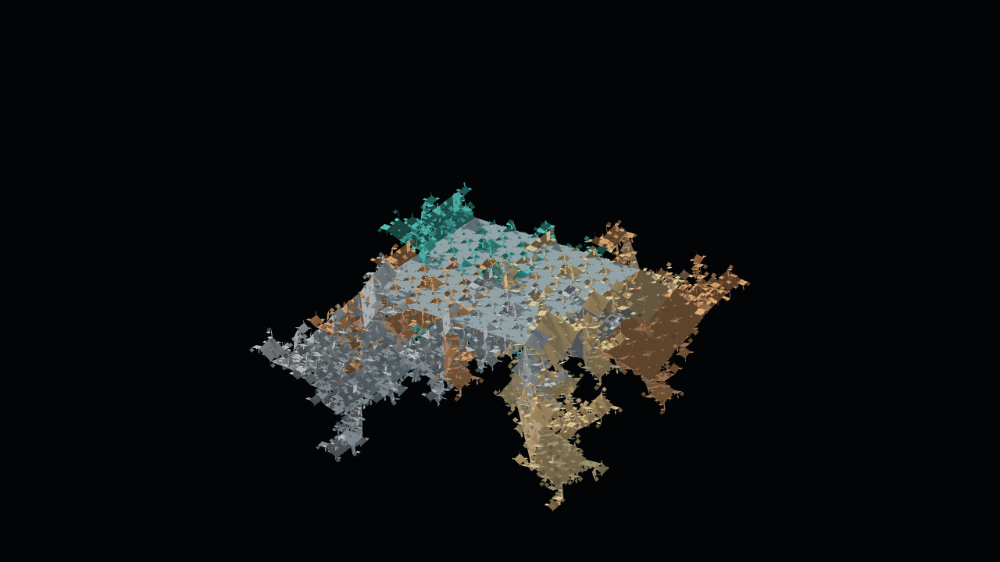

Computed images and film
Every image on this site comes from the mathematical constructions and their rendering code. No generative image model was used to depict the geometry.
Linked continuum
The threefold study retains a literal polygonal Borromean subset and copies of that subset at every word depth. Rendered thickness, colour, lighting, and finite truncation make the structure visible. They are display choices and do not give the infinite zero-volume set a physical interior.
The hero, linked still, and descent film use the 127-map member, with edge subdivision m=3, six axial subdivisions, and central scale q=1/8. Its certified Hausdorff-dimension bound is \(1<\dim_HK<17/8\); its exact Hausdorff and topological dimensions are unknown. The exact IFStile recipe and parameter definitions identify the rendered member.

Films
The films are silent computed visualizations at native 1280 × 720 resolution. Camera motion and finite rendering detail are separate from the definitions of the infinite sets.
Membrane continuum and visual variant
The eight-map reference at q=1/4 is shown below using actual contained square patches through depth five. This is the member used for the explicit dimension and full-ball error certificates.

The panels are finite similarity images of a retained square. They are genuine subsets of their attractor. The image below shows a 12-map anchored variant, with central scale q=1/10 and anchored scale r=9/20. The eight-map reference definition and its certified numerical dimension bounds refer to a different member; those numbers should not be assigned to this image.
A finite display omits smaller patches and does not resolve the entire limit set.

Magnification study
The tangent visualization illustrates increasingly dense orientations of retained central pieces. The every-scale full-ball claim is established by the proof, not by a finite sequence of images.

Reuse
Writing, images, and films use CC BY 4.0. Credit okwhynot-wtf, link to the repository, and identify modifications. Code and original parameter/certificate data use MIT. Full details are on the provenance page.